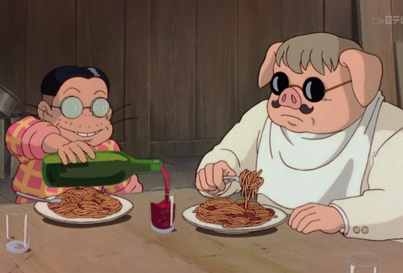

Piccolo's Pasta!

Recipe of the delicious pasta served in Studio Ghibli's "Porco Rosso" Movie.
Time: 45-60min
Serving: 4 people
Ingredients:
- Oil
- 1 can of crushed tomatoes
- 1/4 large white onion diced
- 2-3 garlic cloves
- Salt & pepper
- 2-3 bayleafs
- 1/2 tbsp of italian spices
- 1/2 tbsp of sugar
- 1/2 lb of spaghetti
- Fresh sweet basil (optional)